Box Clamp Type
- 이럴 때
- 배관이 부식·침식되거나 균열이 생겨 새는 경우
- 이렇게
- 배관 모양에 맞춰 클램프를 제작해 씌우고, 그 안으로 컴파운드를 주입합니다.
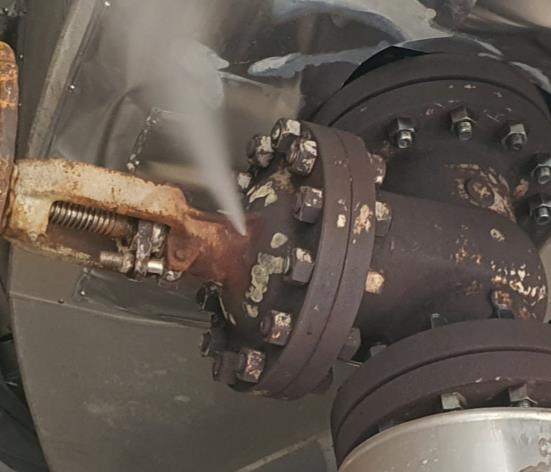
작업 전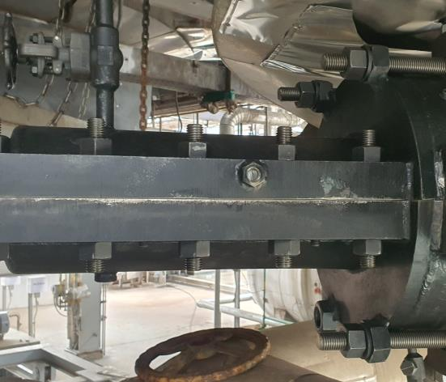
작업 후배관 운전 중
ON-LINE LEAK SEALING
어설픈 수리는 더 큰 사고를 부릅니다
압력이 걸린 배관은 한 번에, 완벽하게 막아야 합니다.
년의 현장 경력
국내 최고 수준의 기술자가 직접 진단하고 직접 시공합니다
LEAK
01
누설 발생
가동 중인 배관의 누설은 시간이 지날수록 커집니다. 잘못 손대면 누설이 사고가 됩니다.
BOX CLAMP
02
클램프 설치
누설 부위를 정밀하게 실측하고 그 배관에만 맞는 클램프를 제작합니다. 치수가 어긋나면 누설은 막히지 않습니다.
COMPOUND INJECTION
03
컴파운드 주입
누설이 완전히 멈출 때까지 컴파운드를 주입합니다. 얼마나, 어디까지 넣을지는 25년의 경험이 판단합니다.
SEALED
04
실링 완료
공정은 한 번도 멈추지 않았습니다
Leak Test로 확인하고 마칩니다.
㈜유진이엔씨 010-6566-0247스크롤하면 누설이 막힙니다 ↓
WHY IT MATTERS
가동 중인 배관은 고온·고압 상태입니다. 클램프 치수가 맞지 않거나 주입을 잘못하면 누설은 더 커지고, 설비와 사람이 위험해집니다. 유진이엔씨는 대표 기술자가 실측부터 Leak Test까지 직접 합니다.
누출 정도, 압력, 온도, 치수를 현장에서 직접 확인합니다.
그 배관, 그 플랜지에만 맞는 클램프를 제작합니다.
Leak Test로 누설이 없음을 확인하고 마칩니다.
온라인 리크 실링이란
압력 배관에서 내용물이 새면 보통은 라인을 세우고 고칩니다. 온라인 리크 실링(On-Line Leak Sealing)은 압력이 걸려 있는 그 상태에서 누설 부위를 밀봉합니다. 공정이 돌아가는 채로 작업이 끝납니다.
셧다운 없이 운전 중에 보수가 끝납니다.
누설이 발생하면 현장에서 바로 밀봉합니다.
폭발성 물질이 있는 환경, 협소한 공간에서도 적용할 수 있는 공법이 있습니다.
배관 누설, 플랜지 누설, 밸브 누설

작업 전
작업 후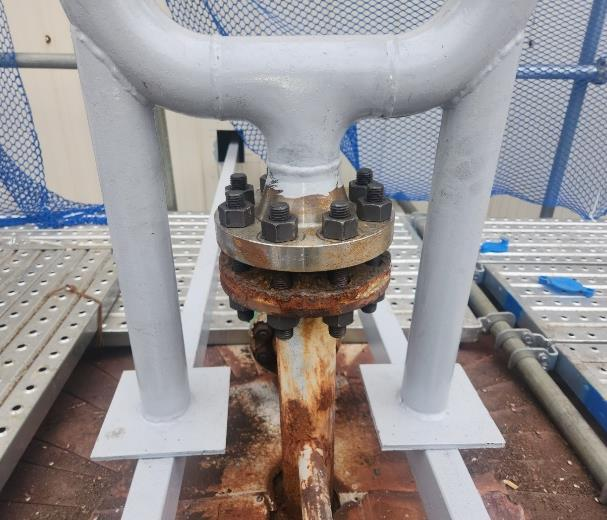
작업 전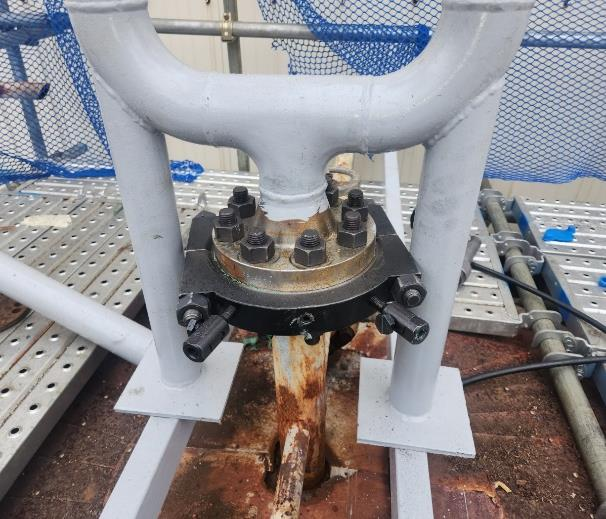
작업 후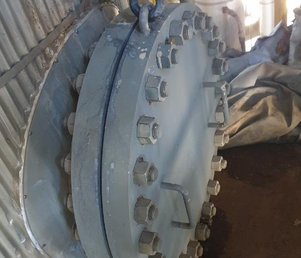
작업 전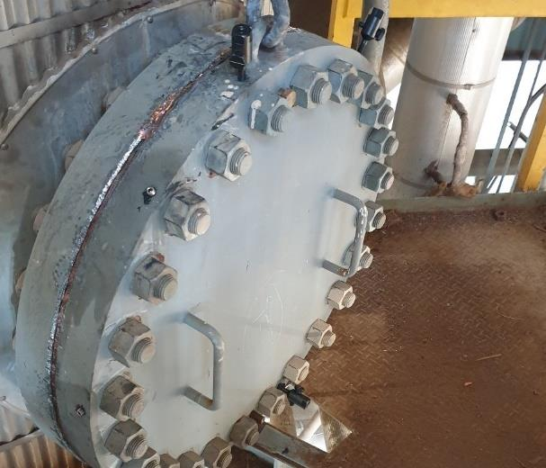
작업 후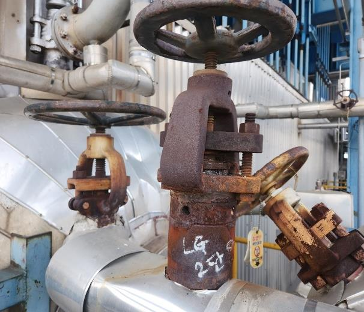
작업 전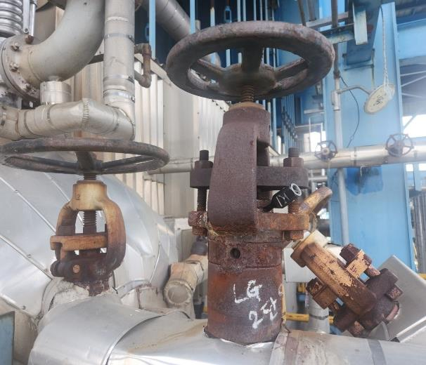
작업 후작업은 이렇게 진행됩니다
Leak Test 통과 누설이 없음을 확인하고 작업을 마칩니다.
배관 보강, 컴포지트 랩핑 Composite Wrapping
부식·침식·누수·외벽 손상 부위를 탄소섬유나 유리섬유에 에폭시를 입혀 감습니다. 구조 강도를 회복하고 수명을 늘립니다. 배관을 잘라내고 새로 넣는 공사가 필요 없습니다.
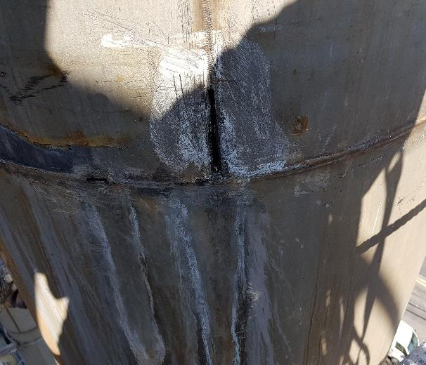
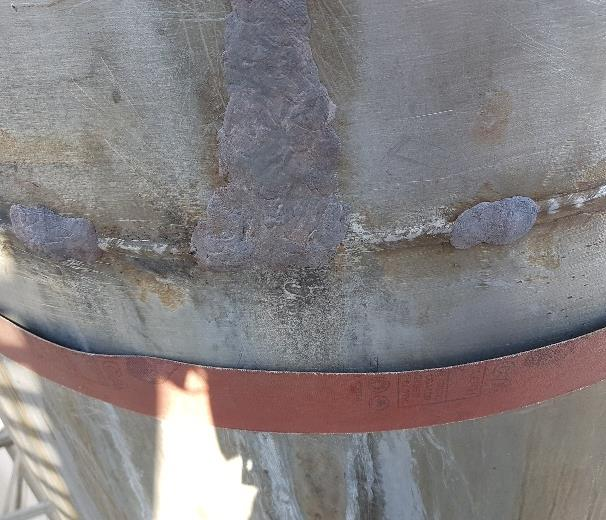
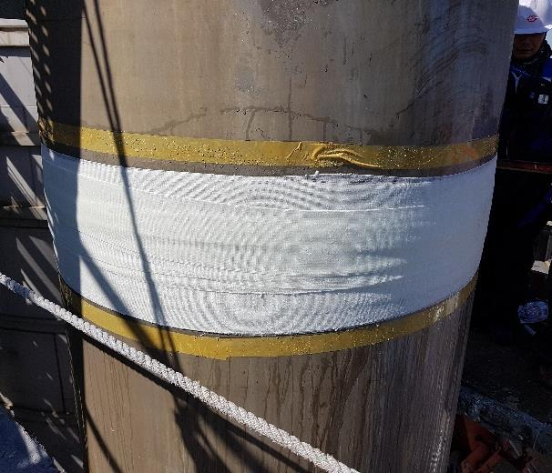
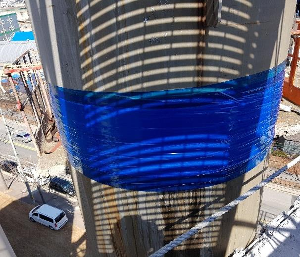
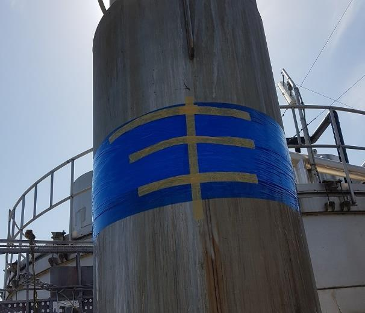
작업 순서: 표면처리 → 프라이머·접착제 도포 → 복합섬유 랩핑 → 경화 → 품질검사
작업 사진
안전과 인력
가동 중인 설비에서, 압력이 걸린 상태로 하는 작업입니다. 산업안전 자격을 갖춘 기술자가 현장을 직접 확인하고 작업합니다.
| 강경태 대표 | 산업안전기사, 산업안전산업기사, 용접기능사 |
|---|---|
| 김희주 | 산업안전산업기사 |
| 강봉식 | |
| 박주영 |
자주 묻는 질문
압력 배관, 플랜지, 밸브에서 내용물이 샐 때 설비를 세우지 않고, 압력이 걸려 있는 상태에서 누설 부위를 밀봉하는 보수 작업입니다. 누설 부위에 맞춤 제작한 클램프를 씌우거나 기기 내부로 컴파운드를 주입해 누설을 막습니다.
가능합니다. 온라인 리크 실링은 공정을 정지하지 않고 운전 중에 작업합니다. 셧다운 없이 작업이 끝납니다.
배관의 부식·침식·균열 누설에는 Box Clamp Type, 플랜지 누설에는 간격과 압력에 따라 Ring Clamp Type 또는 Wire Type, 밸브 그랜드 패킹 누설에는 Valve Gland Packing Sealing을 적용합니다.
누출 정도·압력·온도 확인, 치수 측정, 클램프 제작, 클램프 설치, 주입구 설치, 컴파운드 주입, Leak Test 순서로 진행합니다.
부식·침식·누수·외벽 손상이 생긴 배관과 탱크를 탄소섬유나 유리섬유에 에폭시를 입혀 감아 보수·보강하는 작업입니다. 배관을 교체하지 않고 구조 강도를 회복하고 수명을 늘립니다.
전남 여수시 화정면 여산5길 4-3에 있습니다. 전화 010-6566-0247, 이메일 jwtech45@naver.com으로 연락하시면 됩니다.
회사
| 대표 | 강경태 |
|---|---|
| 설립 | 2026년 8월 1일 |
| 사업자등록번호 | 564-88-03834 |
| 업종 | 서비스, 건설업 |
| 주소 | 전남 여수시 화정면 여산5길 4-3 |
| 조직 | 기술팀, 관리팀 |
25년
회사는 새로 세웠지만,
기술은 25년 동안 현장에서 쌓았습니다.
대표 강경태의 현장 경력은 총 25년입니다. 2026년 8월, 그 경력으로 ㈜유진이엔씨를 세웠습니다.